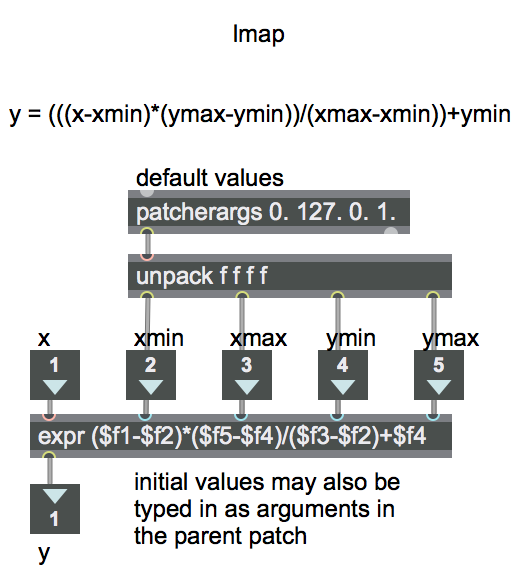

Open the patch "lmap" 
The term "mapping" refers to making a map of correspondences between a "source" domain and some other "target" range. The simplest kind of numerical mapping is called "linear mapping". That's when a one-to-one correspondence is drawn from every value in a source range X to a value that holds an exactly comparable position in a target range Y. For example, in the target range 0 to 100, the value 20 holds exactly the same position as the value 2 does in the source range 0 to 10. In both cases, the value is 20% of the distance from the minimum to the maximum.
To convert one range into another linearly, there are really just two simple operations required: scaling (multiplication, to resize the range) and offsetting (addition, to push the range up or down). If you know the extent of two ranges X and Y, and a source value x, you can find the linearly corresponding target y value with this algebraic equation:
y = (((x-xmin)*(ymax-ymin))/(xmax-xmin))+ymin
This patch uses the expr object to implement that equation. In expr, the items such as $f1 and $f2 mean "the (floating point) number that has come in the first inlet", "the (floating point) number that has come in the second inlet", and so on. (Geeky technical note: We don't need to use quite as many parentheses in the expr object as we did in the equation above, because the ordering of mathematical operations is implicit, due to the operator precedence that is standard in almost all programming languages.)
This patch has inlet objects and an outlet object so that it can be used as an object in another patch. You just save this patch with the name "lmap" somewhere in Max's file search path, and you can then use it as a lmap object in any other patch. You establish the X and Y ranges by specifying their minimum and maximum (xmin, xmax, ymin, and ymax), then you send an x value in the left inlet to get the corresponding y value out the outlet. The patcherargs object supplies default initial values for xmin, xmax, ymin, and ymax in case no arguments are typed into the object when it's created in the parent patch; however, if values are typed in for xmin, xmax, ymin, and ymax (as in lmap 0. 1. -2. 2.), the patcherargs object inside lmap will send those values out instead of its default values.
Go ahead and download that patch and save it with the name "lmap", as it will be used in other examples. In Max, patches that are saved with a one-word filename and used as objects in another patch are called "abstractions". This lmap abstraction functions very much like the zmap object and scale object that already exist in Max, but we've provided lmap here so that you can see how one might implement the basic linear mapping function (in any language).
Download the files used in the above examples by right-clicking the links, and then selecting "Save Link As...".